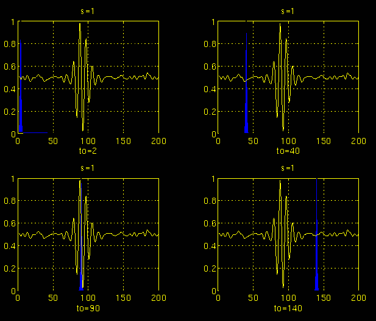
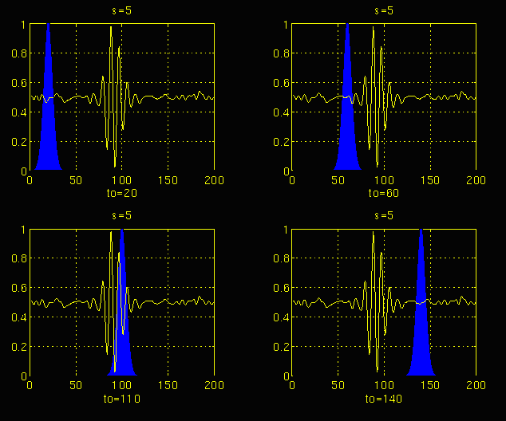
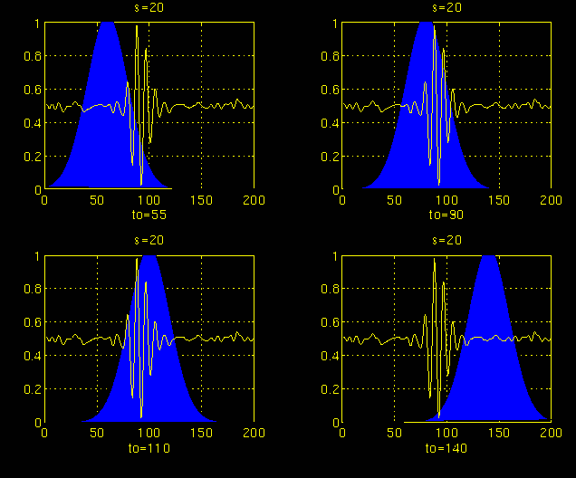
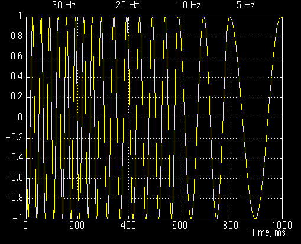
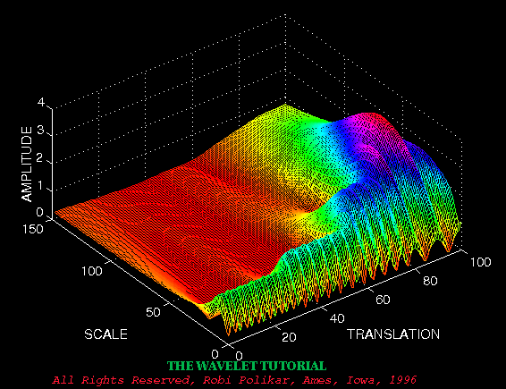
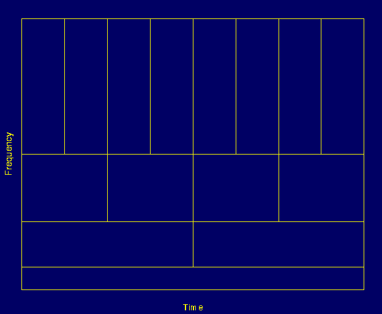
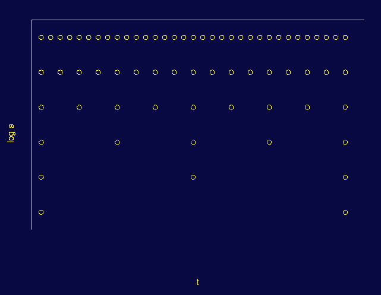
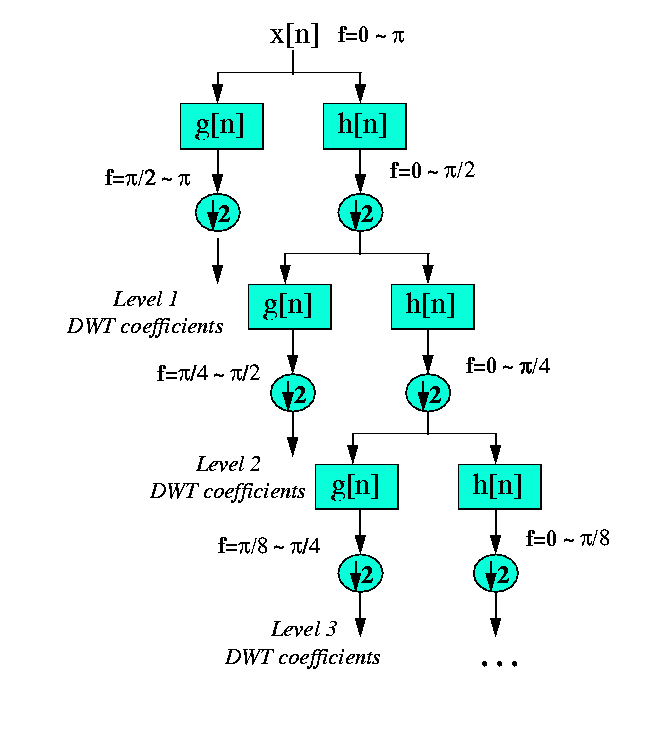

本文是读Rowan University的Robi Polikar的小波变换的小教程的笔记，主要是把关键部分简单
翻译便于自己理解。原文链接为https://users.rowan.edu/~polikar/WTpart3.html.
多分辨率分析
MRA(multiresolution analysis)多分辨率分析是对不同频率范围的信号以不同的分辨率进行分析，
这与STFT中不同的频率成分具有相同的分辨率是不同的。
- 高频成分：高时间分辨率、低频率分辨率
- 低频成分：低时间分辨率、高频率分辨率
实际应用中遇到的波形通常是高频成分出现在较短的时间内，而大多数时间信号都分布在低频区域。这正好是MRA效果最好的信号类型。
连续小波变换
小波变换CWT是短时傅里叶变换STFT的一种替代品。二者都给出了频谱分布的时间变化序列，但也有一些
不同点：
- 不采用窗方法，因此将看到对应于正弦波的单个峰值，即不计算负频率
- 随着频谱范围的变化，窗口的宽度会发生变化
连续小波变换的定义：
如上式所示，变换后的信号是两个变量 $\tau$ 和 $s$ 的函数，分别是平移和标度参数。$ \psi（t）$ 是
变换函数，它被称为母小波。术语母小波之所以得名，是因为小波分析的两个重要属性，如下所述：
wavelet的含义是小波。小意味着窗函数具有有限长度。- 母小波表示在变换过程中不同区间的变换过程中使用到的函数都属于某个特定的函数类
小波变换中没有频率参数，相反有一个缩放因子定义为 $\frac{1}{frequency}$, 这里的frequency对应于STFT中的频率。
缩放因子
小波分析中的scale可以类比地图上的标度尺来理解。地图上的高缩放意味着不含细节的全局视图，而
低缩放意味着包含更多细节的视图。相似的，低频部分与信号的全局信息相关联， 而高频部分与信号的
局部信息关系密切。
CWT的计算
母小波 是所有窗函数的原型，其余窗都是通过母小波的缩放、偏移。对于连续小波变换，需要计算
所有 $s$ 的积分值，但实际中为了可以使用计算机计算，计算离散化的、有限的小波项。
为了便于理解和叙述，整个计算从 $scale = 1$ 即 $ s = 1 $ 开始，从高频部分到低频部分进行。
- 从 $(\tau, s) = (0, 1)$ 开始, 计算沿 $ \tau $ 轴的积分
- 改变 $ s $ 的值，继续沿 $ \tau $ 轴计算积分
- 整个计算直到遍历所有感兴趣的 $s$ 后结束
$s = 1$, 高频部分

$s = 5$, 中频部分

$s = 20$, 低频部分

最终，每一个缩放尺度和每一个时间点的值都计算出来了，横纵轴的坐标与 #STFT# 略有类似。
一个简单的例子
考虑一个频率随时间变化的正弦信号，包含$30Hz, 20Hz, 10Hz, 5Hz$的成分。

小波变换的结果为：

这里坐标轴记为translation和scale而不是time和frequency.但实际上translation
与time几乎等价，而scale与frequency的倒数相关联。
时频分辨率
对于time和frequency分辨率的问题，STFT技术中这二者是保持固定值不变的，而WT对高频
部分有良好的时间分辨率和差的频率分辨率，对低频成分有差的时间分辨率和良好的频率分辨率。

小波变换的数学
连续小波变换的对偶性
小波变换是可逆的，逆变换为
其中 $C_\psi$ 应当满足
其中$ \hat{\psi}(\xi)$ 是$ \psi(t)$的FT变换. 上式成立意味着$ \hat{\psi}(0) = 0$, 也就是
小波变换的离散化
将连续信号离散化是通过采样来实现的，对于FT和STFT的离散化，最常用的是使用均匀采样率。而在WT
中，scale的变化会影响采样率。
根据 Nyquist 定理，采样率和相应的频率有如下关系，
或是
换言之，对于低频成分可以适当降低采样率。scale参数$s$可以取对数轴，之后translation即时间参数
依据scale进行更新。

用数学形式描述：scale的离散化记为$ \boldsymbol{s = s_0^j}$, 对应translation的离散化为$\boldsymbol{\tau = k \cdot s_0^j \cdot \tau_0}$,
其中 $\boldsymbol{s_0>1} $，$ \boldsymbol{\tau_0>0}$. 考虑变换的离散化如何依赖于scale的离散化？
连续变换记为:
代入
如果 ${ \boldsymbol{ \psi_{(j, k)} } }$ 构成正交基，那么变换可化为
离散小波变换
其主要思想与连续小波变换相同，使用数字滤波技术获得数字信号的时间尺度的表示，即指使用不同截止频率的数字滤波器来分析不同尺度的信号。
信号的分辨率通过滤波操作改变，尺度通过上采样和下采样操作来改变。
- 下采样：降低采样率，删除信号的某些样本
- 上采样：通过向信号添加新样本来提高信号的采样率
最开始先使信号通过半频带的低通滤波器 $h[n]$，
之后，根据Nyquist定理可以消去一半的样本点而不影响频率分辨率。
DWT的实际计算方式：DWT通过将信号分解为粗略的近似值和详细信息来分析不同频段的信号。DWT采用两组函数缩放函数和小波函数，实际上与低通和高通滤波器以及滤波器的窗函数相关联。只需对信号进行半带高通滤波器 $g[n]$ 和半带低通滤波器 $h[n]$，滤波后再消去一半的样本。在数学上的表示为：

例如，假设原始信号$x[n]$有$512$个样本点，跨越 $0$ 到 $p$ $rad/s$的频带。在第一个分解级别，信号通过高通和低通滤波器，然后子采样2。高通滤波器的输出有$256$个点，但它只跨越 $\displaystyle\frac{p}{2}$ 到 $p$ $rad/s$, 这$256$个样本构成了DWT系数的第一级。低通滤波器的输出也有$256$个样本点，跨越频带的另一半，然后通过下一级高通和低通滤波器进行进一步分解, 得到$128$个样本点。不停分解，最终得到DWT与原始信号相同数量的系数。
小波变换的逆—重建
重建非常容易，因为半带滤波器形成正交基。上述程序按相反的顺序进行重建。每个电平的信号上采样两个，通过合成滤波器g[n]和h[n]（分别为高通和低通），然后相加。有趣的是，分析和合成滤波器彼此相同，除了时间反转。因此，重建公式变为（对于每层）